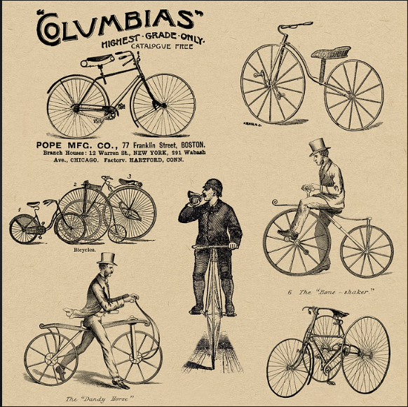

RetroCycle is a trusted name in the world of cycling innovation. Our journey began over a decade ago with a passion for designing and producing high-quality bicycles that cater to cycling enthusiasts of all levels. Since then, we've grown into a renowned brand that stands for excellence, reliability, and a deep love for cycling. Our mission is to empower individuals to embrace cycling as a lifestyle and experience the thrill of two-wheeled adventures. At RetroCycle, we take pride in our diverse range of bicycles, carefully crafted to suit various riding preferences. From sleek road bikes that cut through the wind to rugged mountain bikes that conquer challenging terrains, our product lineup is designed to exceed cyclists' expectations. What sets us apart is our dedication to cyclist satisfaction. Our team of experts is committed to assisting you on your cycling journey, from selecting the perfect bike to providing exceptional after-sales support. Quality is paramount to us, and each RetroCycle bicycle undergoes meticulous testing to ensure optimal performance, durability, and safety. This commitment has earned us the trust of countless cyclists who choose RetroCycle for their riding adventures. As we continue to evolve, we're constantly exploring new horizons of cycling innovation. Our research and development team tirelessly seeks ways to enhance your cycling experience by integrating cutting-edge technologies and features. At RetroCycle, we're not just a cycling company – we're a community of passionate cyclists united by our love for pedaling and exploration. We're driven by a shared commitment to promoting a healthier lifestyle, reducing carbon footprints, and fostering a sense of camaraderie among cyclists. Thank you for choosing RetroCycle as your cycling companion. Whether you're a casual rider or a dedicated cyclist, we're here to provide you with the tools you need to make every ride unforgettable. Welcome to the world of RetroCycle!
About us
